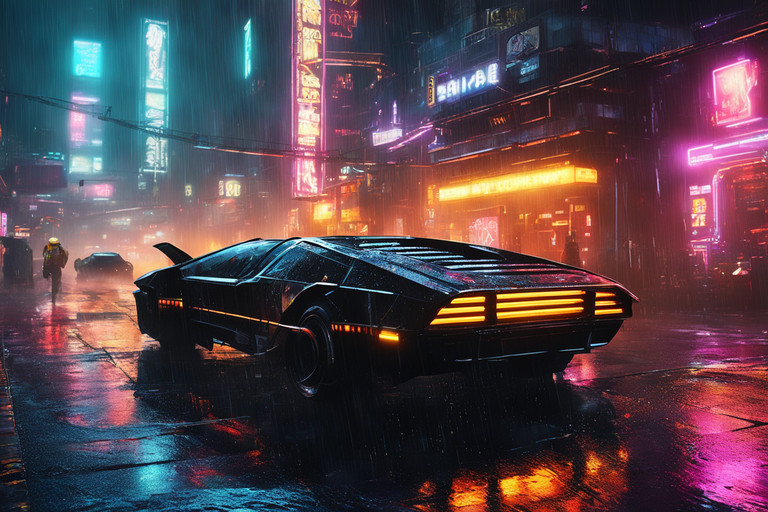

Neon lights paint the chrome towers of Drager City, a metropolis thrumming with life and the pulse of advanced technology. Yet, beneath the gleaming facade lurks a shadow. The Drager gang, a band of ruthless cybernetically enhanced outlaws, seeks to exploit the city's growing pains and seize control.
Amidst this chaos stands Kai, a young man with a rebellious spirit and a unique connection to his AI-powered car, Zenith. More than just a vehicle, Zenith is Kai's partner, confidante, and weapon, its sleek lines and advanced tech concealing hidden potential.
As the Drager gang's grip tightens, Kai finds himself thrust into a desperate fight for the city's future. Fueled by a deep-rooted sense of justice and a thirst for adventure, Kai utilizes his street smarts and Zenith's remarkable abilities to outmaneuver the gang's muscle and tech.
Their daring exploits draw the attention of the Drager leader, the enigmatic Raven, who recognizes a kindred spirit in Kai's defiance. A tense dance ensues, with Kai forced to navigate shifting alliances and moral complexities. He must not only outwit the Drager gang but also grapple with the city's own flaws, where wealth and technology create stark divides.
With each daring escape and thrilling chase, Kai becomes a beacon of hope for the downtrodden, inspiring others to rise against the Drager menace. But the true climax awaits. Can Kai and Zenith overcome the odds, expose the Drager gang's hidden motives, and secure Drager City's future, or will the city succumb to the grip of tyranny?
Drager City is a story of courage, rebellion, and the unbreakable bond between a young man and his extraordinary car. It's a neon-drenched adventure that explores the challenges of rapid technological advancement, the fight for justice in a divided society, and the power of individual action in the face of overwhelming odds.
